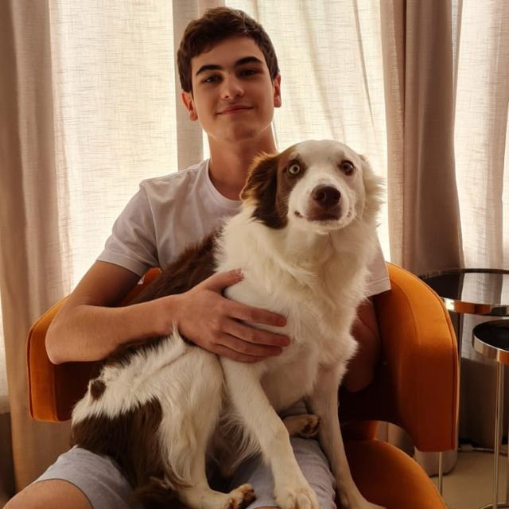

Tiago Alves Pascutti
Olá eu sou o Tiago , nascido em 22 de março de 2007. Com ensino médio completo, atualmente cursando Ciência da Computação na universidade UNIFIL, me encontro no 2 ano do meu curso, e nesse tempo vim a aprender sobre linguagens de programação, robotica, matemática, outras linguagem e muito mais, busco me desenvolver nessa área da computação cada dia mais.

Essa parte contará sobre mim, o site é dividido em 3 partes, essa que nos estamos a qual fala sobre mim de uma maneira mais pessoal, a área trajeto que mostrara um pouco as minhas competências e quem as me concedeu, e por o contato a qual é reservada para me encontrar em outras redes, sem ser esse site 😁 .